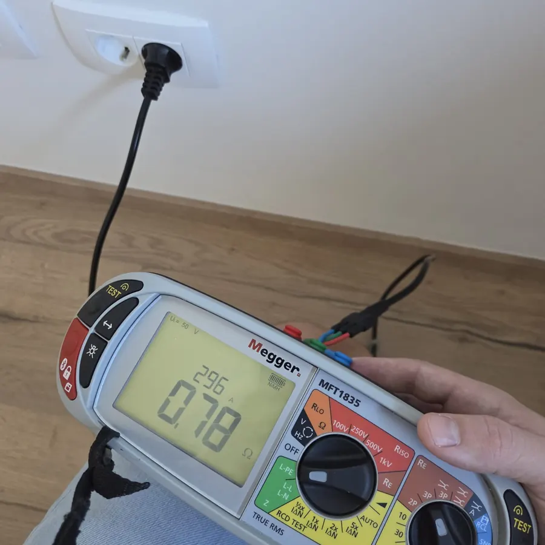
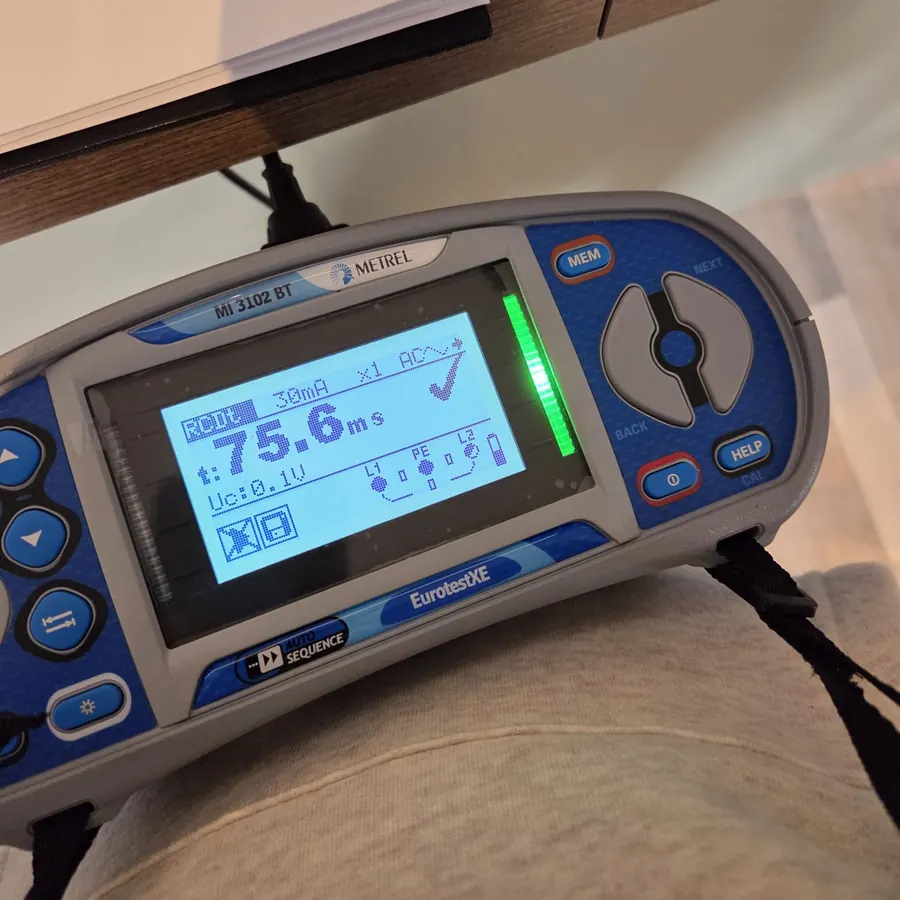
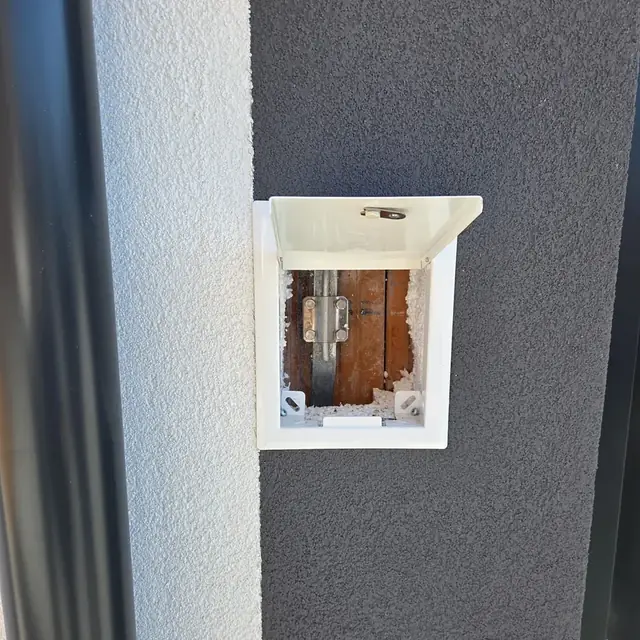
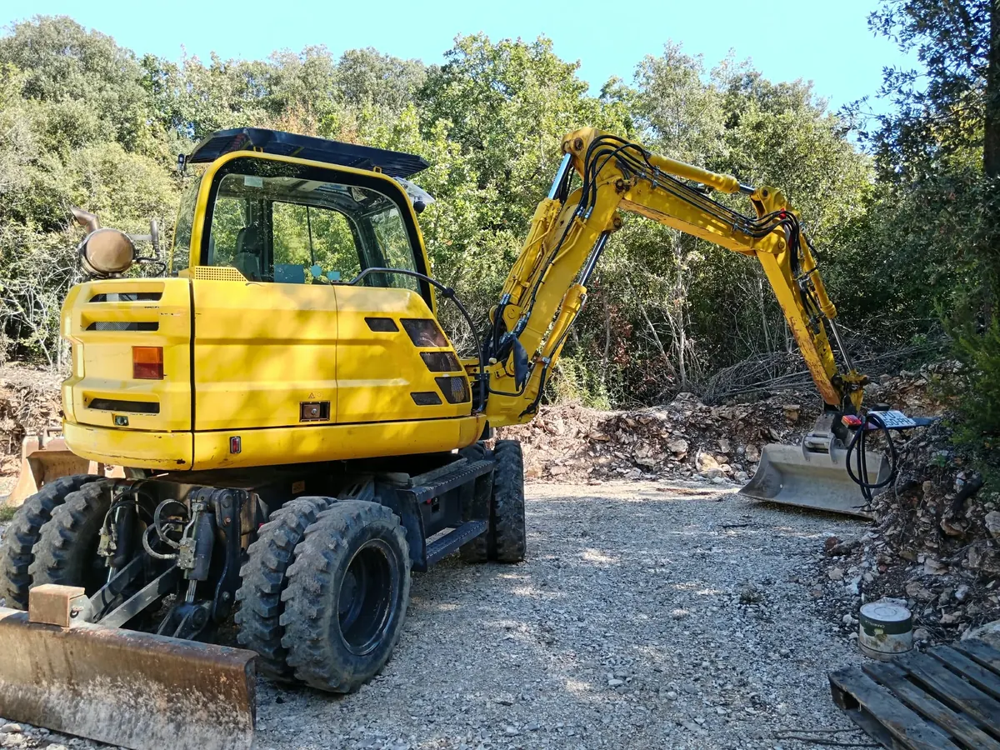
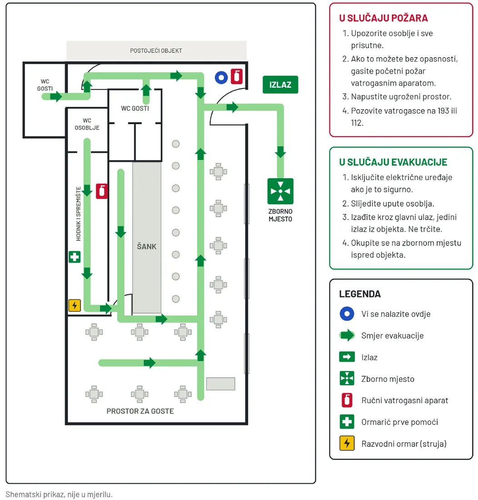
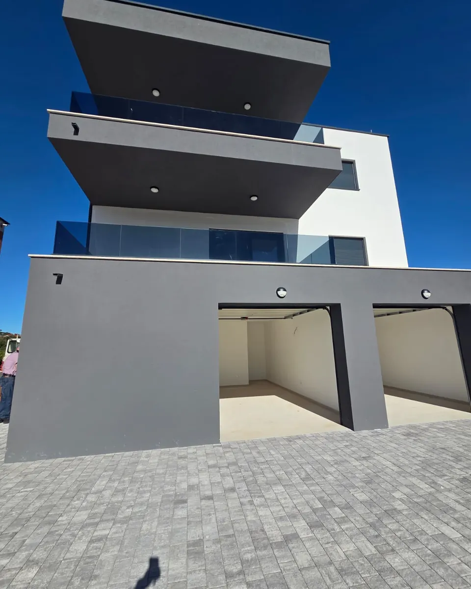

Procjenu rizika
Za svaki posao kod poslodavca, uz program osposobljavanja. Bez nje nijedna druga obveza ne stoji.
Zaštita na radu · Pula i Istra
Procjena rizika, osposobljavanja, ispitivanja, MTU i plan evakuacije za vaš objekt. Organiziramo i vodimo cijeli postupak, a u ponudi je svaka stavka s cijenom.
Pregled postojeće dokumentacije je besplatan. Odgovaramo u roku od 24 sata.
Prvi radnik
Zakon o zaštiti na radu traži nekoliko stvari još prije nego radnik prvi put stane na radno mjesto.
Za svaki posao kod poslodavca, uz program osposobljavanja. Bez nje nijedna druga obveza ne stoji.
Za rad na siguran način, prije samostalnog rada. Pod nadzorom osposobljenog radnika najviše 60 dana.
Netko u firmi mora biti osposobljen za provođenje zaštite na radu.
Evidencije o radnicima i osposobljavanju te zapisnike o ispitivanjima opreme i instalacija.
Usluge
Za poslodavce, ugostitelje i trgovine te za investitore i izvođače u Istri i Primorsko-goranskoj županiji.
Procjena za svako radno mjesto, program osposobljavanja, osposobljavanje radnika, poslodavca i ovlaštenika.
Pripremamo dokumentaciju, organiziramo ispitivanja i vodimo postupak do rješenja.
Električne instalacije, gromobran, panik rasvjeta, radna oprema, radni okoliš, hidrantska mreža i ventilacija.
Osposobljavanje za prvu pomoć na vašoj lokaciji, za cijelu smjenu odjednom. Plan evakuacije s tekstualnim i grafičkim dijelom.
Mjerenja i dokumenti koji se traže za tehnički pregled nove zgrade ili rekonstrukcije.
Što inspektor prvo traži i koje obveze imate s obzirom na broj radnika i djelatnost.
Kako radimo
Pošaljete što imate. Besplatno pregledamo i kažemo što nedostaje ili je isteklo.
Svaka obveza s cijenom.
Dogovaramo termine i vodimo postupak, pa ne morate koordinirati više firmi.
Predajemo zapisnike i dokumente te pratimo kad koje ispitivanje ističe.
Od upita do zapisnika imate jednu osobu za kontakt, bez obzira koliko firmi sudjeluje u poslu.
S terena
Zapisnici koje inspektor traži nastaju na terenu, mjerenjem na svakom krugu i svakoj sklopki.




Plan evakuacije i spašavanja
Izrađujemo tekstualni dio i grafički prikaz putova evakuacije za vaš objekt, spreman za isticanje na zidu.


Za investitore i izvođače
Termine usklađujemo s dinamikom radova, da dokumentacija bude spremna kad dođe tehnički pregled.
NN 71/2025). Iskaznica s ovjerenim dijelom 9B dio je dokumentacije za tehnički pregled.HRN EN ISO 9972. Granica n50 = 3,0 h⁻¹ uz prirodno provjetravanje, 1,5 h⁻¹ uz mehaničku ventilaciju. Kod višestambenih zgrada za svaki stan.Česta pitanja
Ne, dok radite sami i nemate zaposlenih. Obveza nastaje kad zaposlite prvog radnika, bez obzira na djelatnost i broj radnika. Tada je procjena rizika prvi dokument koji inspektor traži.
Prije nego počne samostalno raditi. Novi radnik smije raditi najviše 60 dana pod nadzorom osposobljenog radnika. Kad prelazi na posao za koji nije osposobljen, osposobljava se ponovno.
Na svaka 2 do 50 radnika koji istodobno rade mora biti nazočan najmanje jedan osposobljeni radnik, a na svakih sljedećih 50 još jedan. Računa se po smjeni i po lokaciji, ne po firmi. Uz to je obvezan ormarić s propisanim sanitetskim materijalom.
Rok za rješenje je do 60 dana od uredno podnesenog zahtjeva kad se provodi očevid. Što se točno traži razlikuje se od ureda do ureda i ovisi o prostoru. Pripremamo dokumentaciju koju traži vaš ured, a ako zatraži dopunu, i nju.
Ovisi o broju radnika, djelatnosti i objektu. Nakon kratkog razgovora šaljemo ponudu s cijenom po svakoj stavci. Pregled postojeće dokumentacije je besplatan.
Upit
Ispunite nekoliko polja i pošaljite upit preko WhatsAppa ili e-pošte. Možete i nazvati.